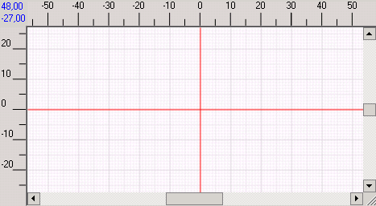
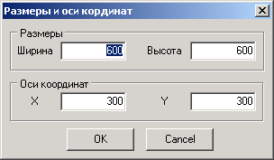

Это чертеж, или планшет, или рабочая поверхность - называйте как угодно.
Обладает свойствами:
1. Размеры - высота и ширина.
2. Оси координат - длина положительных участков осей X и Y. Эти длины должны быть меньше соответствующих размеров.
3. Масштаб.
Эти размеры можно изменить через главное меню окна, в котором находится чертеж, через пункт Чертеж -> Размеры .

Кнопки изменения масштаба как правило вынесены на панель инструментов. Подробнее см. Масштаб.
Размерность зависит от чертежа. Для плиток и узоров - всегда миллиметры. Для участка - по умолчанию метры. При желании для участка можно задать размерность в сантиметрах или миллиметрах. См. Настройки. Шаг координатной сетки зависит от размерности. При размерности в миллиметрах и сантиметрах - 1 мм, в метрах - 10 см.
В левом верхнем углу отображаются координаты мыши. Ее перемещение "привязывается" к узлам координатной сетки. Так удобнее рисовать правильные прямоугольники и вообще контролировать размеры. Если нажать Ctrl, то шаг перемещений становится произвольным, не округляется до делений координатной сетки. Практически это означает, что при рисовании отрезки могут начинаться не только в точках пересечения линий сетки, а и внутри ячеек.
Если рисуемый объект большой, но чертить его приходится в крупном масштабе, то для перемещения по чертежу удобно пользоваться Мини-дисплеем.